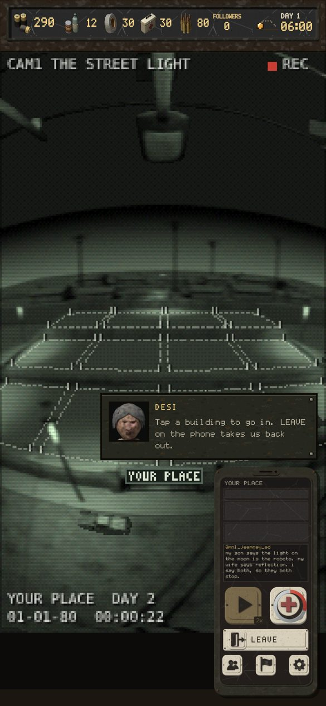
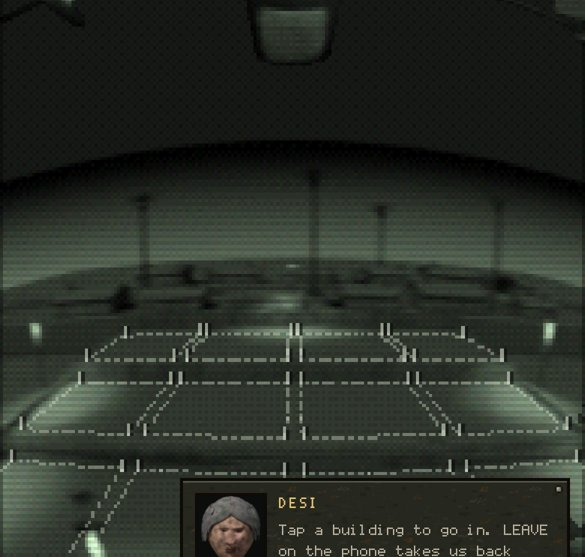
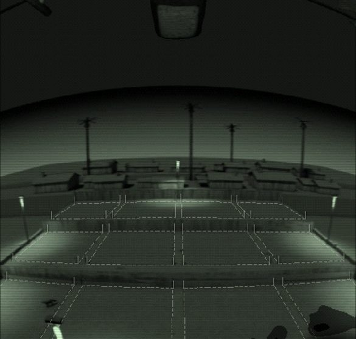
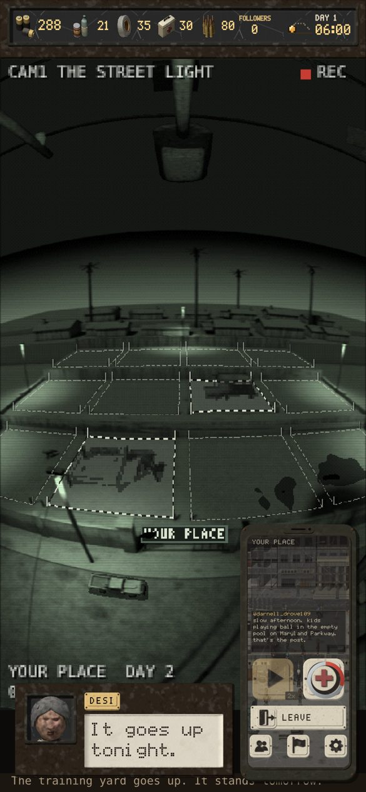
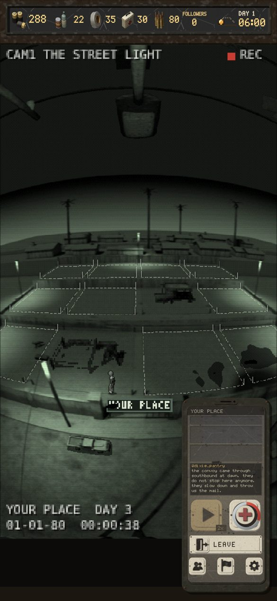
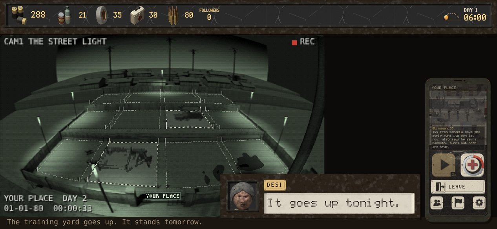

before

now
Your place's camera is now drawn as big as the loading-screen feeds: 432 by 768 instead of 180 by 320, almost 6 times the pixels. It has the same tape look as the loading screens. You can see the houses past the wall, the palms, the poles and the truck.







Still to do: the buildings you put up are still the old smaller pictures blown up (they get re-rendered at this size next), and your people walking around your place.